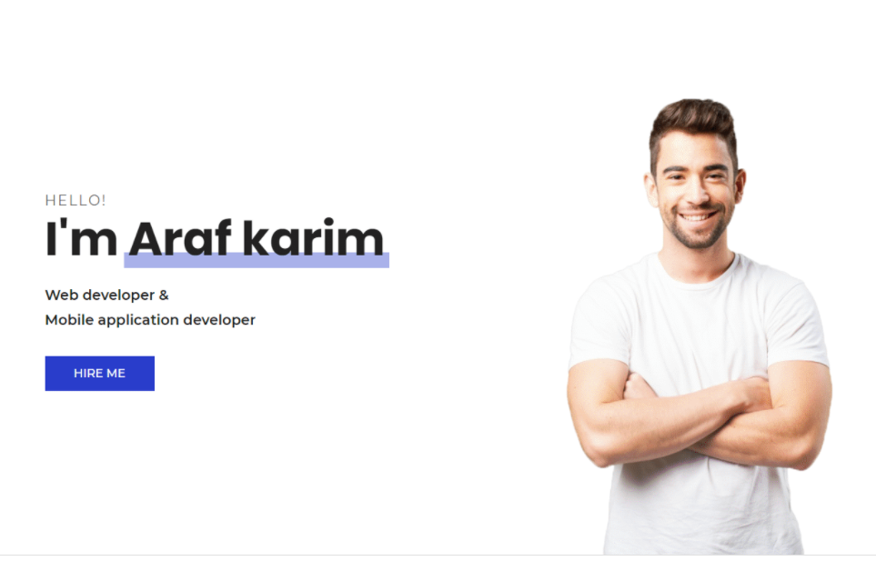
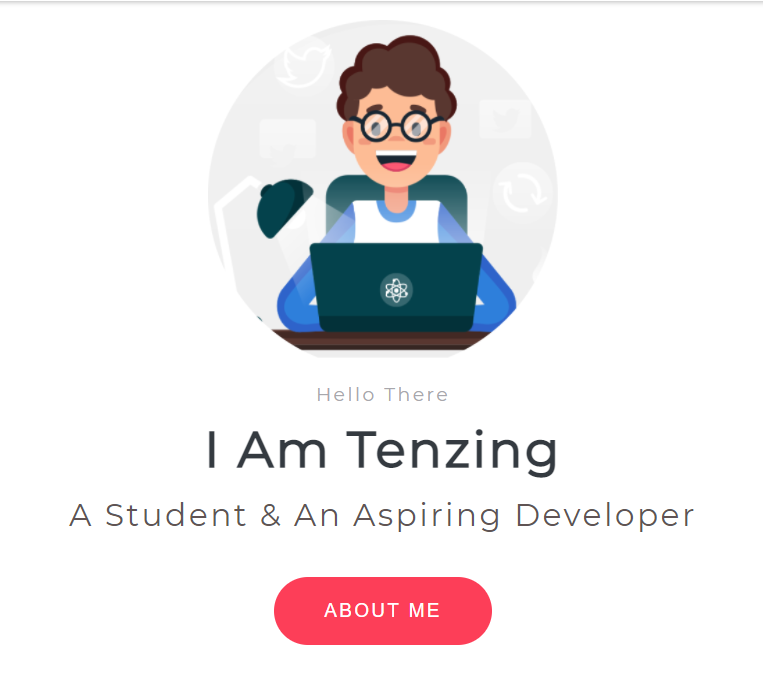
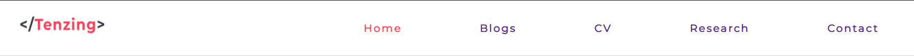
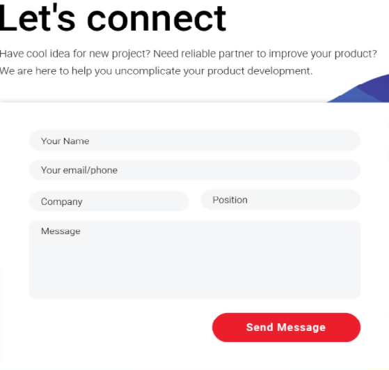
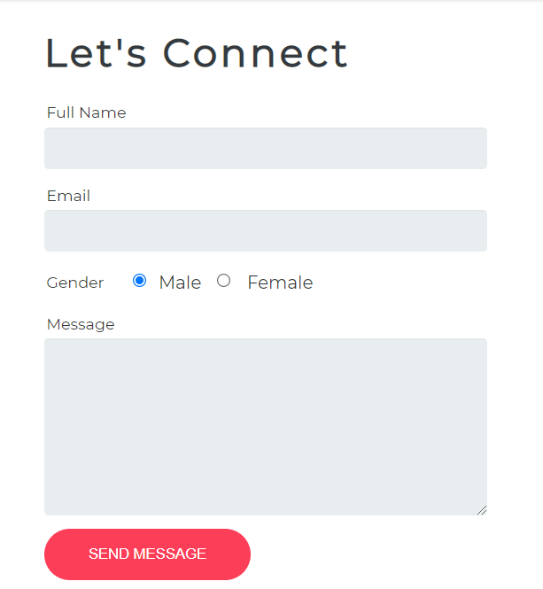
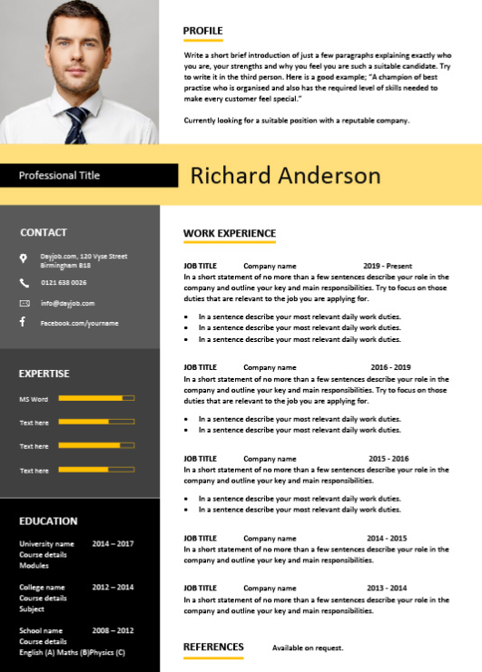
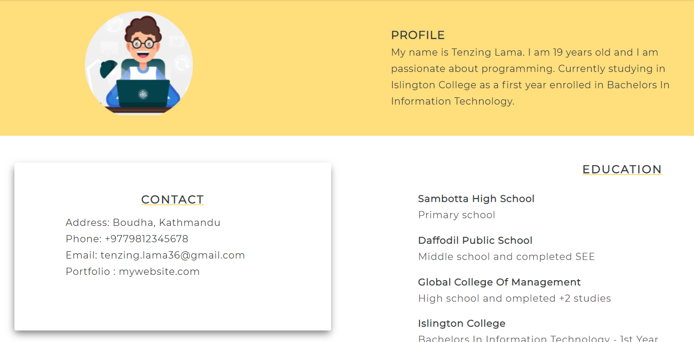
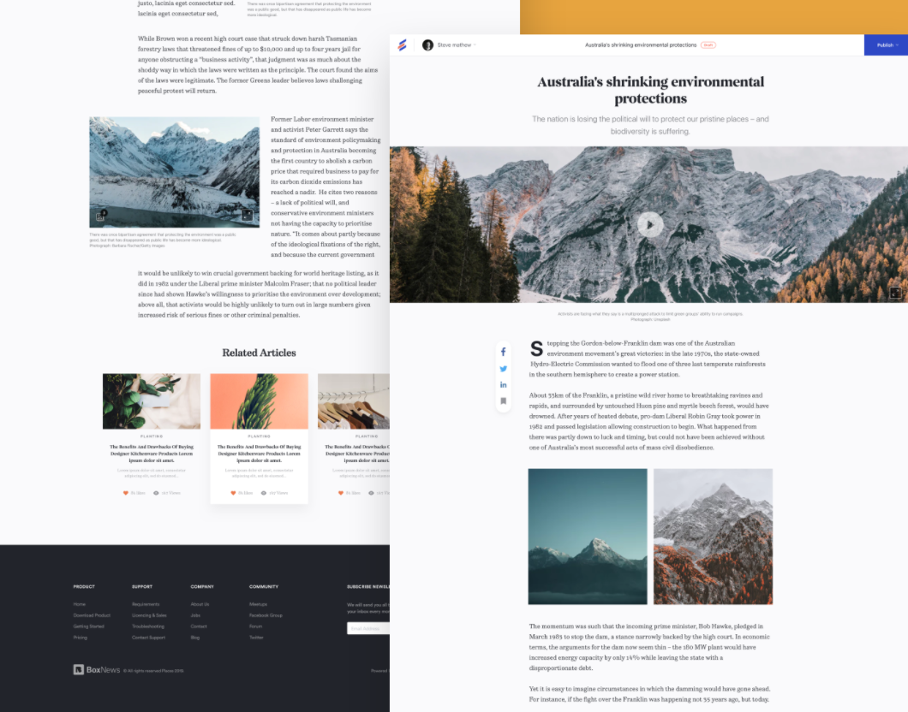
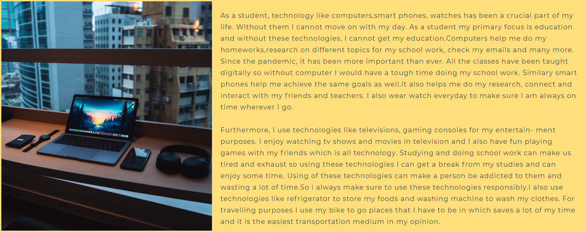

RESEARCH

Home Page


The first picture is from behance.net. It is a portfolio home page
which was clean . So I created my home page in a similar way using
the same elements. I changed the layout and also style the button
in my own way.
Logo

The first logo was from dribble.com. It is a text logo which was
creative so I created my logo in the same way and just changing
the color.
Contact Form


The first contact form is from dribble.com. I really liked the
overall form layout which is simple and clean. The second contact
form is what I came up with. I just made some changes in the input
styles, buttons and also added my own radio button keeping the
overall layout similar.
CV


The first CV is from dayjob.com . I liked the format of the CV and
it looked modern. So I chose to create a similar CV for mywebsite.
I changed some color patterns and styled in my own way.
Blog


The first picture is from dribble.com. It was a website for a news
article. I liked the content which included the picture and
paragraph side by side and also the cards at the last which made
the page look more good. So my blog page was also inspired from
that website and I created a similar page as in second and third
piture. Using CSS Flexbox, I was able to achieve the overall
layout.